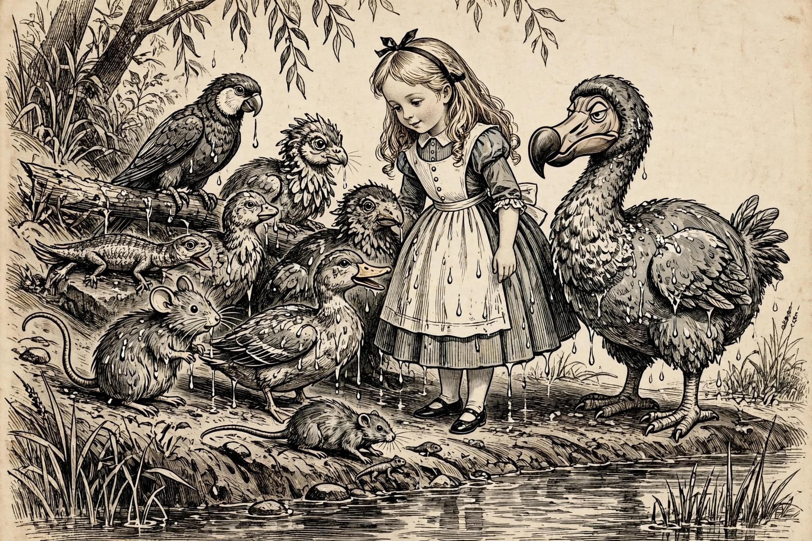

Chapter 3: A Caucus-Race and a Long Tale

They were indeed a queer-looking party that assembled on the bank - the birds with draggled feathers, the animals with their fur clinging close to them, and all dripping wet, cross, and uncomfortable.
The first question of course was, how to get dry again: they had a consultation about this, and after a few minutes it seemed quite natural to Alice to find herself talking familiarly with them, as if she had known them all her life.
'What I was going to say,' said the Dodo in an offended tone, 'was, that the best thing to get us dry would be a Caucus-race.'
'What is a Caucus-race?' said Alice; not that she wanted much to know, but the Dodo had paused as if it thought that somebody ought to speak, and no one else seemed inclined to say anything.
'Why,' said the Dodo, 'the best way to explain it is to do it.' (And, as you might like to try the thing yourself, some winter day, I will tell you how the Dodo managed it.)
First it marked out a race-course, in a sort of circle, ('the exact shape doesn't matter,' it said,) and then all the party were placed along the course, here and there. There was no 'One, two, three, and away,' but they began running when they liked, and left off when they liked, so that it was not easy to know when the race was over.
However, when they had been running half an hour or so, and were quite dry again, the Dodo suddenly called out 'The race is over!' and they all crowded round it, panting, and asking, 'But who has won?'
This question the Dodo could not answer without a great deal of thought, and it sat for a long time with one finger pressed upon its forehead, while the rest waited in silence. At last the Dodo said, 'Everybody has won, and all must have prizes.'
'But who is to give the prizes?' quite a chorus of voices asked.
'Why, she, of course,' said the Dodo, pointing to Alice with one finger; and the whole party at once crowded round her, calling out in a confused way, 'Prizes! Prizes!'
Alice had no idea what to do, and in despair she put her hand in her pocket, and pulled out a box of comfits, (luckily the salt water had not got into it), and handed them round as prizes. There was exactly one a-piece all round.
'But she must have a prize herself, you know,' said the Mouse.
'Of course,' the Dodo replied very gravely. 'What else have you got in your pocket?' he went on, turning to Alice.
'Only a thimble,' said Alice sadly.
'Hand it over here,' said the Dodo.
Then they all crowded round her once more, while the Dodo solemnly presented the thimble, saying 'We beg your acceptance of this elegant thimble'; and, when it had finished this short speech, they all cheered.